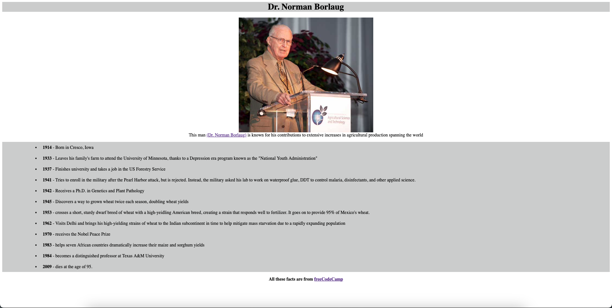
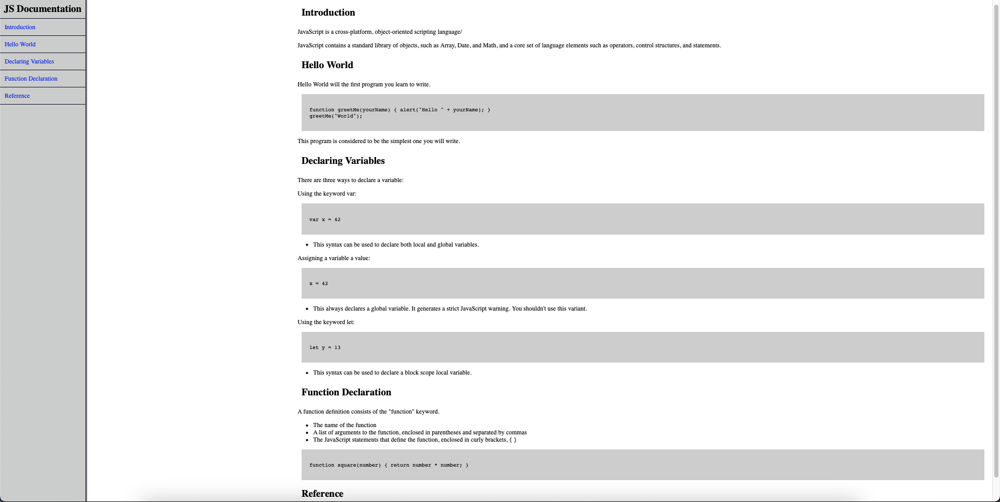
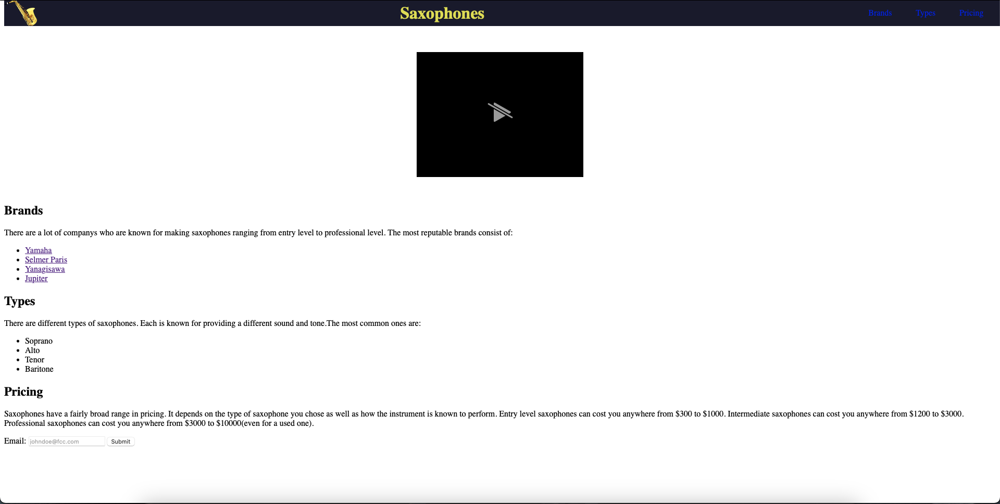

Hi, my name is Arden
a Junior Software Engineer

About Me
My name is Arden and I am a Junior Software Engineer from San Diego, CA.
I have worked with many languages throughout my college career including C, C++, and Python. I am currently learning HTML, CSS, and JavaScript to add to my skillset.
Here are a few of my projects
Survey Form
A design of an online survey form which demonstrates the ability to enter information, select from a list of options, check boxes, and submit.
Tribute Page
A demonstration of the ability to incorporate sourced images in an online webpage, creating a bullet list, and linking the source of the information.
Technical Documentation
A webpage which demonstrates the use of a navbar to help navigate the different sections of the page.
Product Landing Page
A design of a website which uses a navbar, includes an mp4 file, and links to each company described in the description.